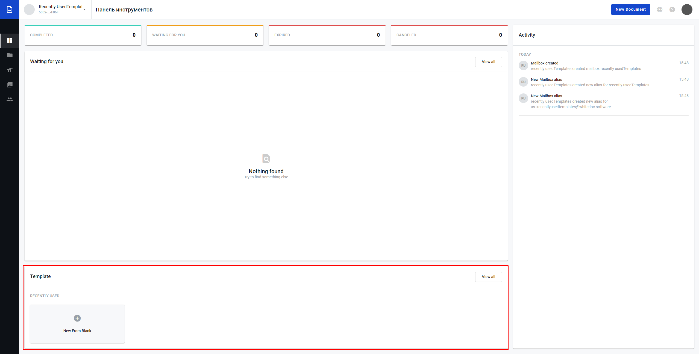

Recently used templates on dashboard¶
Сontent:
Recently used templates block allows to user create new template from dashboard, see the list of the last fourth recently used templates, open edition form of the particular recently used template and open templates list form from dashboard page.
{kind=link}
Open template creation form from dashboard¶
Click on “New From Blank”

User will be redirected to template creation page https://staging.whitedoc.space/template/form/create
Open template list page from dashboard¶
Click on “View all”

User will be redirected to template creation page https://staging.whitedoc.space/template/list?s=mailbox
Recently used templates displaying on dashboard¶
If user use template at least one time the template will be displayed at the recently used templates form on dashboard
If user click on recently used template it will open particular template for edition
Maximum quantity of the templates at this particular form is 4 templates

If user creates new envelope using new template and he has already had 4 templates at recently used the oldest one will disapear and new one will be shown to the user